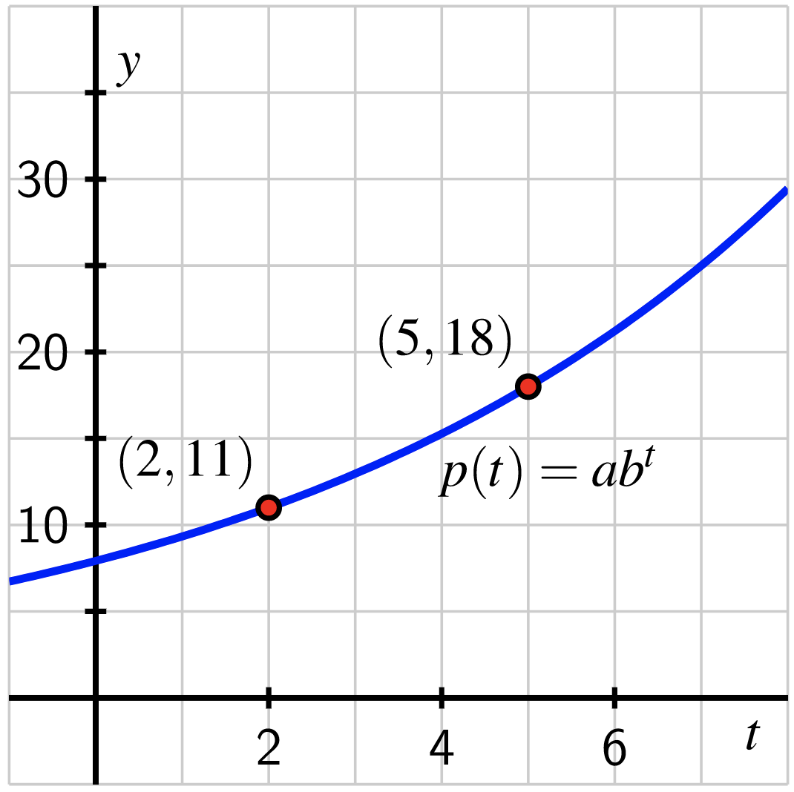

Since we know that \(p(t) = Ab^t\text{,}\) the two data points give us two equations in the unknowns \(A\) and \(b\text{.}\) First, using \(t=2\text{,}\)
\begin{equation*}
Ab^2 = 11\text{,}
\end{equation*}
and using \(t=5\) we also have
\begin{equation*}
Ab^5 = 18\text{.}
\end{equation*}
Because we know that the ratios of outputs of an exponential function corresponding to equally-spaced inputs must be constant, we consider the ratio of our outputs \(\frac{18}{11}\text{:}\)
\begin{equation*}
\frac{18}{11} = \frac{Ab^5}{Ab^2} = \frac{b^5}{b^2} =b^3\text{.}
\end{equation*}
Solving for \(b\text{,}\) we find that
\begin{equation*}
b = \sqrt[3]{\frac{18}{11}}\approx 1.1784\text{.}
\end{equation*}
Using the exact value \(b = \sqrt[3]{\frac{18}{11}}\) and substituting this value for \(b\) in \(Ab^2 = 11\text{,}\) we see that
\begin{equation*}
A\left(\sqrt[3]{\frac{18}{11}}\right)^2 = 11 \Rightarrow A = \frac{11}{\left(\frac{18}{11}\right)^{2/3}}\approx 7.9215
\end{equation*}
Therefore,
\begin{equation*}
p(t) = \frac{11}{\left(\frac{18}{11}\right)^{2/3}}\left(\sqrt[3]{\frac{18}{11}}\right)^t\approx 7.9215(1.1784)^t
\end{equation*}
and a plot of \(y=p(x)\) confirms that the function indeed passes through \((2,11)\) and \((5,18)\text{:}\)
